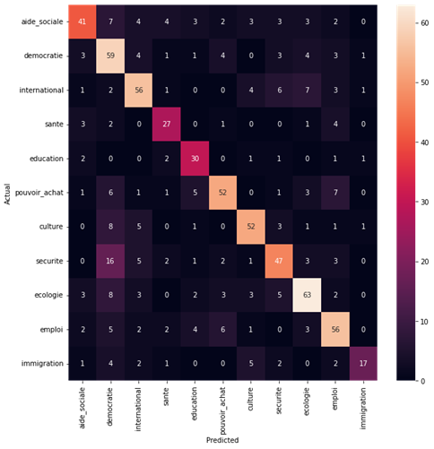
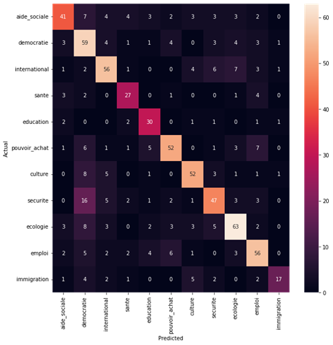

Application Web Quiz Interactive pour l'association 'Préserve Ton Droit' | Novembre 2023 - Aujourd'hui


Voir le projet sur GitHub

Passionné par l'intelligence artificielle et le développement en Python, avec une solide expérience en programmation.
Phone:+33 7 67 30 43 98
Email: vincenttran94@hotmail.fr


 
